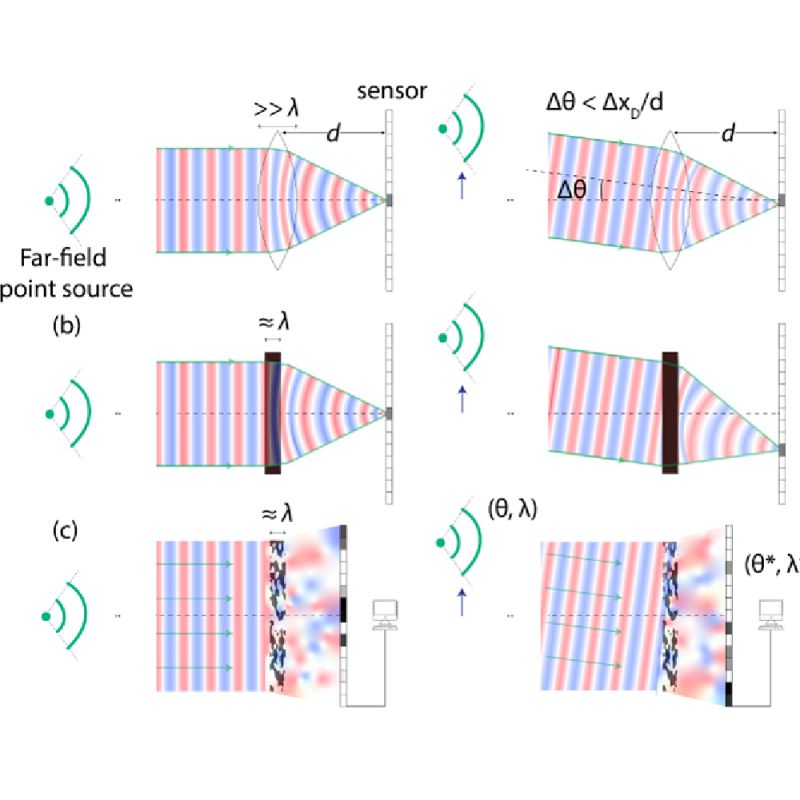

Welcome! My name is William Li. I am currently a medical student at Harvard working with Xiaowei Zhuang on 3D-genome imaging of the brain. I completed my undergraduate studies at MIT, where I double majored in physics and computer science and did research with the groups of Marin Soljačić, Steven Johnson, and Manolis Kellis. My interests lie in the development of imaging and computational methods to study neurodegeneration and age-related neurological diseases.
You can learn more about my work on my Research page and see my published papers under Publications. For more about me, visit my Google Scholar and LinkedIn. Please reach out by email if you would like to get in touch.
Selected Publications

Li WF,
Arya G,
Roques-Carmes C,
Lin Z,
Johnson SG,
Soljačić M
Transcending shift-invariance in the paraxial regime via end-to-end inverse design of freeform nanophotonics
Transcending shift-invariance in the paraxial regime via end-to-end inverse design of freeform nanophotonics
In
Optics Express,
2023.
We present a method for the nanophotonic inverse design of compact imaging systems whose resolution is not constrained by paraxial shift-invariance. Our design is done end-to-end, integrating density-based full-Maxwell topology optimization with a fully iterative elastic-net reconstruction algorithm.
Cite Transcending shift-invariance in the paraxial regime via end-to-end inverse design of freeform nanophotonics
@article{li2023transcending,
author = {Li, William F and Arya, Gaurav and Roques-Carmes, Charles and Lin, Zin and Johnson, Steven G and Soljačić, Marin},
year = {2023},
month = {07},
pages = {24260-24272},
title = {Transcending shift-invariance in the paraxial regime via end-to-end inverse design of freeform nanophotonics},
volume = {31},
journal = {Optics Express},
doi = {10.1364/OE.492553}
}